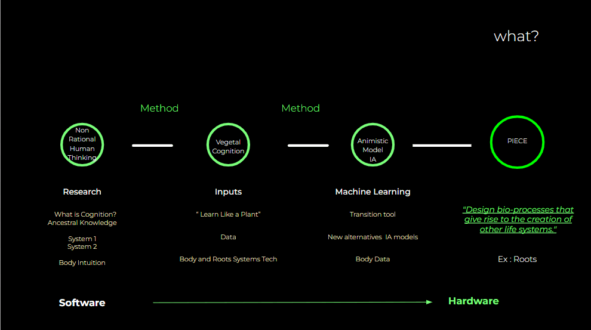

Website Software
Non-Western AI model + Living Roots Research Artefact + Vegetal Cognition = Future Animist Tech°

After conducting my explorations in conjunction with relevant interventions, I find myself in a moment of reflection where I return to question and recall my initial inquiry: What is the future of the ancestral? By "ancestral," I encompass rooted knowledge, evolutionary memory, and collective language that shape the diverse forms of culture within each family, extinction,live and dead, communities, and species interacting with our planet. It is through this reflective process that I have reformulated my initial question and developed the narrative which I term ANIMISTIC TECH .
ANIMISTIC TECH is a Methodology, Process, and Artifact for Exploration living materials in this case *Roots Exploration.
Website Software